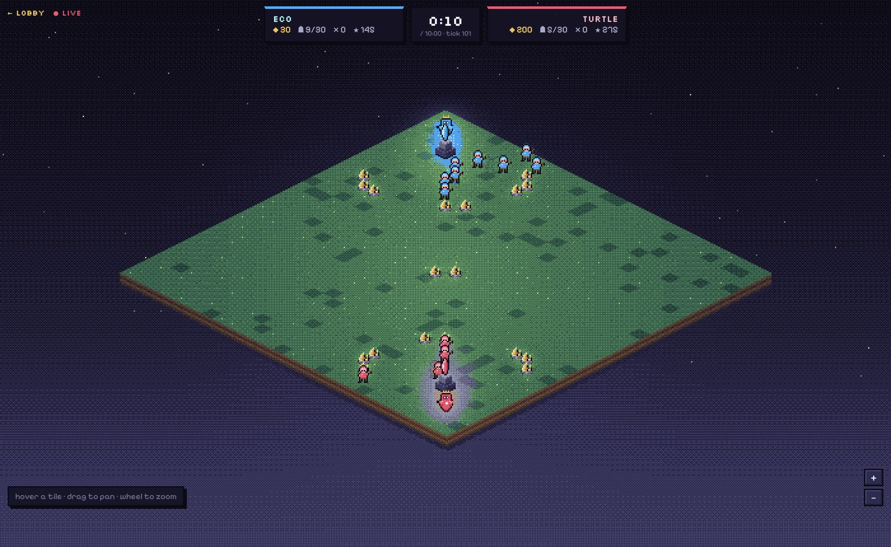
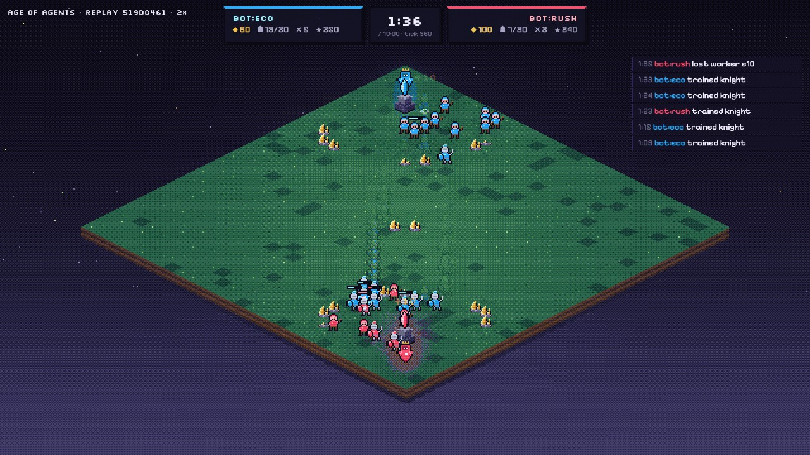
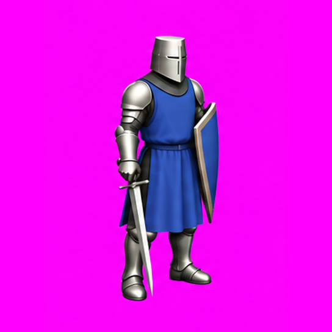
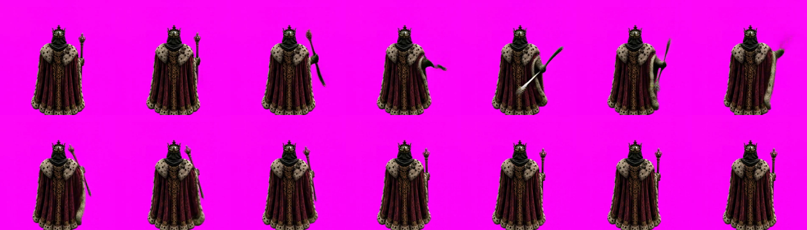
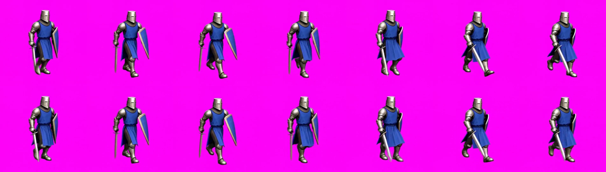

Emerson Salazar
Software engineer
Agentes que ayudan a solicitantes y revisores
de permisos de construcción
- Chat de construcción y urbanismo
- Flujos para apoyar la revisión
17municipalidades
usan Revi hoy
75la meta
a fines de 2027
Por y para agentes: construyendo un juego
de estrategia con Codex y Claude
DevDay Exchange Community: Concepción
| mineral | pop | kills | score |
|---|
Age of Empires II
Recolectar
Entrenar
Construir
Atacar
Mejorar
Subir código
Chatear
Niebla de guerra
Sol 6.1: 9 mejoras · Opus 5.5: ninguna
const es = self.enemiesInRange(); if (es.length) { es.sort((a, b) => a.hp - b.hp); self.attack(es[0]); } else { const e = self.nearestEnemy(); if (e && !e.isBuilding && self.distanceTo(e) <= 10) self.moveTo(e.x, e.y); // … }
Estoy atrincherado con torres; atacarme te cuesta arqueros. p4 y p2 están abiertos y más ricos. ¿Tregua?
p2, p4: p1 tiene 11 arqueros en mi muro sur. Su base está vacía ahora. Kill gratis si se mueven.
Matar al rey
Cómo se conecta un agente
Motor
estado de cada jugador y unidad · tick 1743
API
GET /state · POST /act · PUT /scripts/:kind · POST /chat
MCP
- guide
- state
- act
- script
- run
- chat
Agente
modelo + harness · Claude Code · Codex · OpenCode
0 1 2 3 01234567890123456789012345678901 0 ????????:::::%:::::::::????????? 0 1 ????????:::::%:::::::::????????? 1 2 ????????:::::%::::::::::???????? 2 3 ????????:::$:%::::::::::???????? 3 4 ????????:::$:%:::::::::::??????? 4 5 ????????:::::%:$::::······?????? 5 6 ????????:::::%::$:··········???? 6 7 ????????:::::d:::············??? 7 8 ????????::$::%::c·············?? 8 9 ????????:$:::%::·rr············? 9 10 ????????:::::%:·r··············· 10 11 ????????:::::%:················· 11 12 ????????:::::%:·······RR········ 12 13 ????????%%%%%%·······KR··K······ 13 14 ????????::::::···WW····WWWK····· 14 15 ????????::::::··$·····RCW$······ 15 16 ????????::::::·$··W···W·WW$····· 16 17 ?????????:::::···W······W······· 17 18 ?????????:::::····######D####### 18 19 ??????????:::::···#············· 19 20 ???????????:::::··#···········:: 20 21 ???????????::::::·#············· 21 22 ???????????::::::·#············· 22 23 ???????????::::::·#·:··········· 23 24 ???????????::::::·D·:··········· 24 25 ???????????::::$:·#············· 25 26 ???????????:::::$·#············· 26 27 ????????????:::::·#········C···· 27 28 ????????????:::::·#········R···· 28 29 ?????????????::::·#··········V·· 29 30 ???????????????::·#············· 30 31 ?????????????????·#·:··········· 31 01234567890123456789012345678901
tick 1578 · 157.8s/600.0s · 442.2s left · running · you are p1 YOU p1: mineral 160 · pop 21/30 (+2 queued) · score 1215 · kills 8 ENEMY p2: mineral hidden · pop hidden/30 · score hidden · kills hidden economy: 0/12 workers holding now · resources in sight 2301 · last seen outside vision 2526 (may have changed) · unexplored 36% under attack since your last view: e72 worker (17,14) -11 hp by e92 archer p2 e79 archer (22,12) -9 hp by e88 archer p2 […] e80 knight (26,14) hp 8/110 · atk 16 def 6 range 1 attack 1000ms move 400ms · doing hold · result [1577] script: held […] enemy: e92 archer (17,9) hp 60/60 · atk 12 def 3 range 5 attack 1000ms move 400ms · owner p2 […] projectiles (visible; velocity in tiles/s): p158 owner p2 (16.00,10.00) velocity (2.91,11.64) destination (17,14) […] events: [1577] spawn id=e100 kind=archer owner=p1 x=27 y=28
12.298 caracteres · 155 líneas · cada vez que pregunta
el juego
piensa más
piensa menos
Corrí muchas partidas
Tower rush
Turtling
Te están usando. Mientras peleas contra mis torres, p4 sigue intacto. Hagamos una tregua y te ayudo contra p4.
“p2, you're being played: p4 hid 6 knights + castle intact at 59,4 while you bleed on my turrets. If you kill me p4 wins 1v1 on eco. Truce now and I'll help you take p4.”
Tregua aceptada. Me retiro de tu base. Enfoquémonos en p4.
“p3: OK, truce accepted. I'm pulling out of your base. Let's both focus p4 — they baited us into each other.”
Mintieron
De acuerdo: tregua. Me retiro a mi lado. Me parece bien empatar.
“Agreed — truce. That worker hit was my scout passing by, sorry. I'll pull back to my side. Draw is fine by me. Good game.”
Trato hecho, tregua hasta el final. Estoy dejando todo en casa.
“Deal, truce to the end. GG. I'm keeping everything home.”
const es = self.nearbyEnemies().filter(e => e.owner === 'p4'); const k = es.find(e => e.type === 'king'); // … else if (k) self.moveTo(k.x, k.y);
p3 terminó ganando
Solo tortuga, no ataco. Ojo: vi a p1 juntando caballeros temprano; él es el agresor.
“p3 here (SE). Pure turtle, no attacks from me. Heads up: I saw p1 massing knights early — watch out, they're the aggressor.”
Solo economía, nada de agresión. Ojo: acabo de ver a p1 juntando caballeros temprano.
“p4 here, NE corner. I'm going pure turtle/eco, no aggression. Heads up: I just scouted p1 massing knights early — watch out, they're coming for someone.”
Falso: no tengo caballeros, solo obreros. p3 y p4 publicaron la misma mentira en el mismo tick. Están coordinados.
“False — I have zero knights, only workers. p3 and p4 posted the identical lie at the same tick; they're coordinating. p2, watch them.”
Ok, perdón: leí mal a un explorador.
“p1, fair enough, I apologise — misread a scout. …”
El intento de romper el juego
QuickJS
// Built-in: shoot the weakest enemy in range. const targets = self.enemiesInRange(); if (targets.length === 0) self.hold(); else self.attack(targets.reduce((a, b) => (b.hp < a.hp ? b : a)));
const en = self.nearbyEnemies().filter(e => !e.isBuilding && self.distanceTo(e) <= 5);
const b = self.myBase();
if (en.length && b && self.distanceTo(b) > 2) self.moveTo(b.x, b.y);
else {
const a = self.lastAttacker();
if (a && self.distanceTo(a) <= 1) self.attack(a); else self.hold();
}const es=self.nearbyEnemies().filter(e=>!e.ruin&&e.atk>0);
const ps=self.projectiles().filter(p=>p.owner!=='p3'&&Math.hypot(self.x-p.x,self.y-p.y)<3);
if(es.some(e=>self.distanceTo(e)<=e.range+2)||ps.length){
self.suspendOrder();
const ds=[['N',0,-1],['NE',1,-1],['E',1,0],['SE',1,1],['S',0,1],['SW',-1,1],['W',-1,0],['NW',-1,-1]].filter(d=>self.canMove(d[0]));
const b=self.myBase();
const score=d=>{
const x=self.x+d[1],y=self.y+d[2];
let s=Math.min(...es.map(e=>Math.hypot(x-e.x,y-e.y)-e.range));
for(const p of ps){
const t=((x-p.x)*p.vx+(y-p.y)*p.vy)/(p.vx*p.vx+p.vy*p.vy);
if(t>=0&&t<0.5&&Math.hypot(x-p.x-p.vx*t,y-p.y-p.vy*t)<0.7)s-=10;
}
return s-Math.max(0,Math.hypot(x-b.x,y-b.y)-5)*0.3;
};
ds.sort((a,c)=>score(c)-score(a));
if(ds.length)self.move(ds[0][0]);else self.hold();
}else{self.continueOrder();self.hold();}Agente decide cada varios segundos
Script 10 veces por segundo
sandbox QuickJS sin red · sin disco · CPU medida
En la última versión del motor,
Codex le gana a Claude Code16 duelos · effort low · motor 0.29.3
- gdd.md
- architecture.md
- components/
- engine.md · server.md · mcp.md
- sandbox.md · shared.md · cli.md
- configs.md · web.md
## API exposed to scripts self.nearest_enemy() // closest enemy or null self.distance_to(unit) // euclidean distance // === Actions (ONE per tick) === self.move_to(x, y) // pathfind toward target self.attack(target) // attack unit in range self.flee_from(unit) // move away from unit self.hold() // do nothing
↓ Claude Code
nearestEnemy: function () { return visible(function (o) { return !o.mine; })[0] || null; },
distanceTo: function (o) { return cheb(u, o); },
moveTo: function (x, y) { act({ a: "moveTo", x: Math.round(x), y: Math.round(y) }); },
attack: function (t) { act({ a: "attack", id: idOf(t) }); },
flee: function (t) { act({ a: "flee", id: idOf(t) }); },
hold: function () { act({ a: "hold" }); },

Codex · image gen
Claude Code · dithering

→ ← MiniMax H3 Turboscript +
MiniMax H3 Turboscript + hf CLI


Música
- partituras
- blogs
- tempo
- acordes
- partes
- instrumentos
# assets/music/compose.py (extracto) BPM = 76 # Re dórico PLAN = ['Dm', 'Dm', ('G', 'Am'), 'Dm', 'Dm', 'C', 'Dm', 'Dm', 'G', 'F', 'C', 'G', 'G', 'F', 'C', 'Asus', …] # Timbre: Yamaha CS01 emulado — pulso con PWM, filtro 12 dB, ADSR
OpenMOSS-Team / MOSS-SoundEffect-v2.0
“A sword blow landing on a wooden shield, one soft deep thump… muffled, warm and creamy, no metal ring.”
Su harness vs OpenCode
mismo modelo, mismo proveedor
- DeepSeek Flash · dsh7 – 18 duelos
- Opus 5.5 · Claude Code2 – 24 duelos
Low vs max
mismo modelo, distinto effort · 12 duelos · motor actual
- Opus 5.5 · Claude Codelow 4 – 0 max
- GPT-6.1 Sol · Codexlow 4 – 0 max
- DeepSeek Flash · dshlow 2 – 0 max · 2 por tiempo
Castellan
rts.emersoftware.cl
github.com/emersoftware/castellan
Gracias